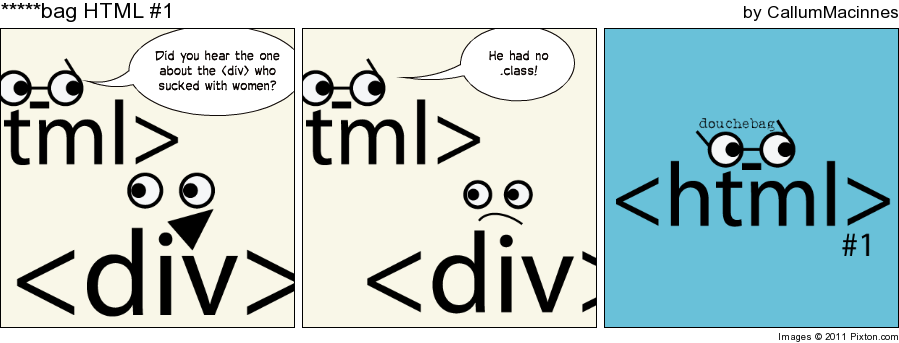

This is an example of an article. I could write a ton of different text here, but we'll leave it at that.
Section!
Within this article, I also have a section about puppies, because why not?
I think there's an echo in here. Why do you say that? asks Sam. Watch, ECHO.
Echo
Echo
Echo
9500 Gilman Drive, La Jolla CA, 92093
Leftovers from Grouping Content (4.4 in Spec)
4.4
Code
What's the Hello World code for C?
#include <stdio.h>
main(){
printf("Hello World \n");
return 0;
}
Adapted from tutorialspoint.com
Quotes
One of my favorite quotes comes from The Two Tours by J.R.R. Tolkien.
"There is some good in this world, and it's worth fighting for"
Enrollment
To enroll in CSE 134B, you must take the following classes (in order by when you should take them)
CSE 11
CSE 12
CSE 15L
CSE 20
CSE 21
CSE 30
CSE 100
You can choose from the following departments:
UCSD
CSE
ECE
MATH
UCR
CSE
Comics
It's common in computer science, and even the internet, to create nonsense comics. Here's one:

Nonsense HTML comic
Leftovers from Text-level Semantics (4.5 in Spec)
4.5
Text Size
Text can come in many different sizes. Small, superscript or subscript. By the way, if you ever wanted to achieve superscript, you have to type CTRL + SHIFT + +.
Superscript is a letter written or printed above the line
Abbreviation
Before asking questions you should RTFM!
Data and Time
Here is a binary number represented with the data tag: 1337
This part of the document was written at .
Variable
E=mc2 is a famous equation.
Sample Output
The output from a very simple computer program is Hello World!
Mark
I'm a good at grammar. I wish the other students would fix they're documents.